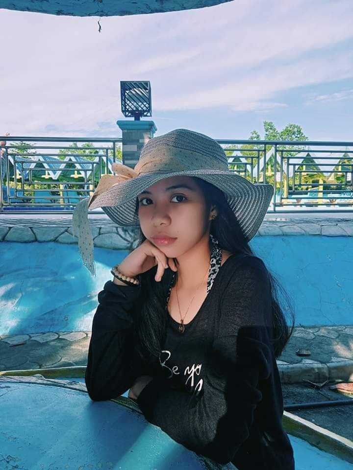

Hi! I'm Diane Caryl C. Largoza
BS Information Systems student at Caraga State University. Passionate about technology, business, and creative exploration. Always eager to learn, build, and grow.
"Building a future from the possibilities I choose to pursue."
Learn More About Me